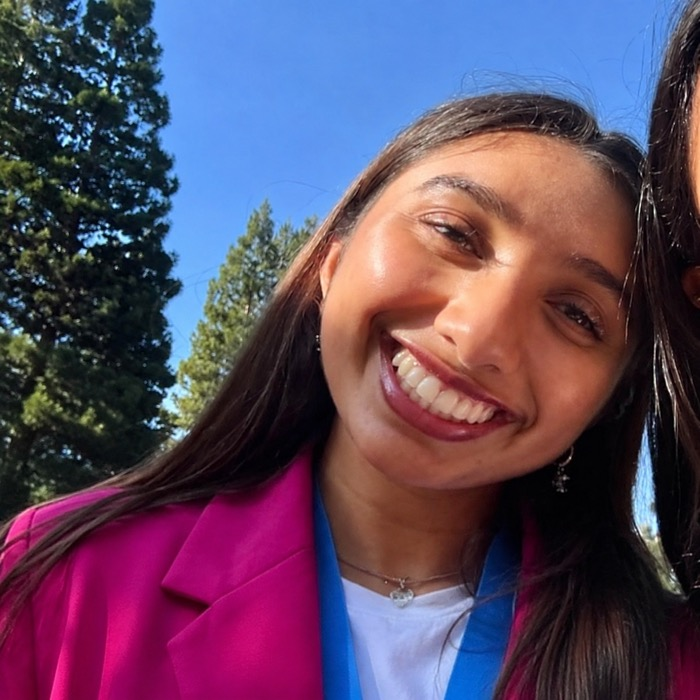

Skip to main content

About
Research
People
Publications
Events
Contact
Apply
People
Our team
Executive Board

Shree Rao
President of Operations
Shree Rao
B.S. Neuroscience, class of 2029. Jefferson Scholar in the Program of Core Texts and Ideas. Studies cognitive control and reading development in late childhood at the Developmental Cognitive Neuroscience Lab.
Donovan Santine
President of Research
Donovan Santine
B.S. Biomedical Engineering Honors, class of 2028. Designs ear-EEG electrodes and event-related potential paradigms in Dr. José del R. Millán's Clinical Neuroprosthetics and Brain Interaction Lab. Founder of MoltGrid, an open-source AI agent infrastructure platform.
Advisors
Dr. Jordan Amadio
Affiliate Faculty, Department of Neurosurgery,
Dell Medical School
Dr. Jordan Amadio
Board-certified neurosurgeon, NIH-funded investigator in Texas Robotics, and co-founder of the NeuroLaunch incubator. Director of neurosurgery at Neuralink and chief of spinal neurosurgery at the Olympia Neurological Institute. MD from Harvard and MIT, MBA from Harvard Business School.
Sidney Harris
Faculty Advisor for Operations
Sidney Harris
B.S. in Neuroscience from UT Austin, class of 2026. Former president of UT Synapse. Currently a teaching assistant at the university.